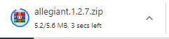
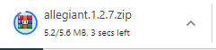

NIM = 1922500128
Nama = Vallerey Oscar Widi Yosma
Kelompok = SI5J
Pada pertemuan 5 tanggal 15 November 2021, saya dapat menyimpulkan antara lain:
- Bagaimana memilih themes/tema yang cocok.
- cara install tema ada 3
1) langsung online
https://wordpress.org/themes/
2) semi online
unggah file zip tema
3) pindahkan folder tema.
- Mendowload tema dari web lain.
- Mengatur tampilan menu warna, mengubah situs icon.
- Mengatur tampilan menu pos, kategory dan laman.
- Terakhir pulang hore.
 
